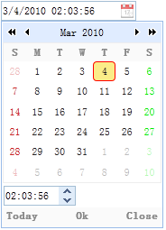

扩展自$.fn.datebox.defaults，使用$.fn.datetimebox.defaults重写默认值对象。
和日期输入框类似，日期时间输入框允许用户选择日期和指定的时间并按照指定的输出格式显示。相比日期输入框，它在下拉面板中添加了一个时间微调器。

使用标签创建日期时间输入框。
使用Javascript创建日期时间输入框。
日期输入框扩展自combo(日期输入框)，日期时间输入框新增的属性如下：
| 属性名 | 属性值类型 | 描述 | 默认值 |
|---|---|---|---|
| currentText | string | 文本显示为当前天按钮。（该属性自1.4版开始可用） | Today |
| closeText | string | 文本显示为关闭按钮。（该属性自1.4版开始可用） | Close |
| okText | string | 文本显示为确定按钮。（该属性自1.4版开始可用） | Ok |
| spinnerWidth | number | 定义datetimebox组件嵌入的时间微调器的宽度。 | 100% |
| showSeconds | boolean | 定义是否显示秒钟信息。 | true |
| timeSeparator | string | 定义在小时、分钟和秒之间的时间分割字符。（该属性自1.3版开始可用） | : |
日期时间输入框的方法扩展自datebox(日期输入框)，日期时间输入框重写的方法如下：
| 方法名 | 方法参数 | 描述 |
|---|---|---|
| options | none | 返回属性对象。 |
| spinner | none | 返回时间微调器对象。 |
| setValue | value | 设置日期时间输入框值。
代码示例： $('#dt').datetimebox('setValue', '6/1/2012 12:30:56'); // 设置日期时间输入框的值
var v = $('#dt').datetimebox('getValue'); // 获取日期时间输入框的值
alert(v);
|
| cloneFrom | from | 克隆一个datetimebox控件。（该方法自1.4.1版开始可用）
代码示例： <input id="from" class="easyui-datetimebox">
// 克隆一个存在的datebox组件
$('.dt').datetimebox('cloneFrom', '#from');
|